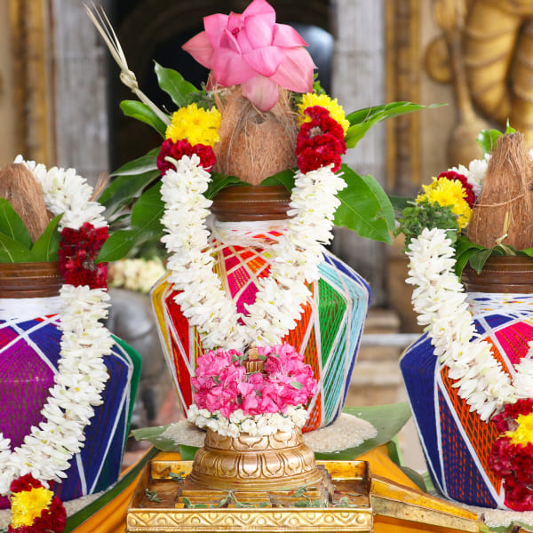
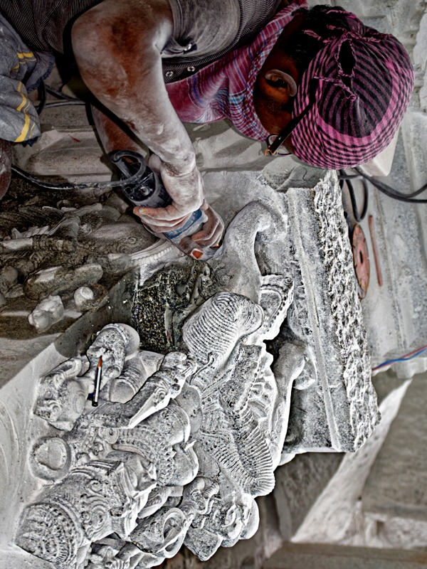
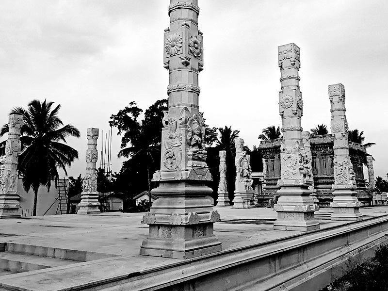

Maha Kumbhabhishekam
The grand consecration ceremony of Sri Samayapuram Mahamariamman Devasthanam. This sacred event marks the completion of Phase 1 of the temple construction and the formal installation of the deity.
Kumbhabhishekam is the most auspicious ceremony in a temple's life, where the divine energy is invoked and established in the sanctum sanctorum. Thousands of devotees are expected to participate in this historic event.
Upcoming Events
Stay updated with temple activities
Maha Kumbhabhishekam
Grand consecration ceremony of the temple. The most awaited event marking the completion of Phase 1.
UpcomingNavaratri Celebrations
Nine nights of devotion dedicated to the Goddess. Special poojas, cultural programs, and community gatherings.
UpcomingDaily Poojas & Abhishekams
Morning: 6:00 AM – 12:00 PM | Evening: 4:00 PM – 8:00 PM. Special Abhishekams on Tuesdays and Fridays.
UpcomingAnnadaan — Community Feeding
Free meals served to 500+ people daily at the AnnaPoorni Dining Hall. Special feasts on Pournami (Full Moon) days.
UpcomingLatest News
Updates from the temple

April 2026Temple Construction Phase 1 Nearing Completion
The first phase of the temple construction including the Garba Griha, Maha Mandapam, and the first Pragaram is nearing completion. The Staphathi and skilled artisans continue their meticulous work.

March 2026Intricate Stone Carvings Taking Shape
The 38 stone pillars with Goddess carvings (Vigrahams) are being sculpted by skilled Shilpis. Each pillar features detailed carvings of the Ashta Mari, Ashta Matrika, Ashta Lakshmi, and Ashta Durga.
 February 2026
February 2026
Donation Drive for Raja Gopuram Construction
Phase 2 fundraising has begun for the construction of the magnificent 108 ft Raja Gopuram. Generous contributions from devotees are welcome.
For Temple Administrators: This section can be updated regularly with new events, news, and announcements. Contact the web administrator to add or modify content.